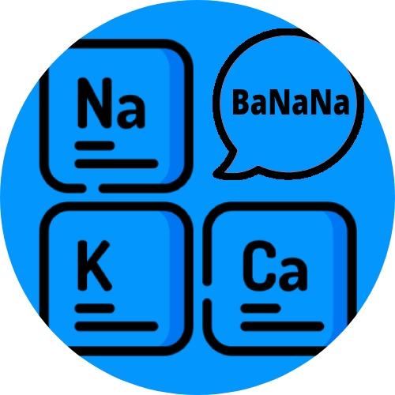

portfólio brook-sys
Projetos

AniFire
Player de Animes feito feito na linguagem Vb.Net

GifSearcher
Programa feito para possibilitar a pesquisa por imagem do buscador Yandex em Gifs, escolhendo o frame desejado para pesquisar.

Words to Periodic Table
Site que possibilita criar palavras e até frases inteiras com a Tabela Periodica.